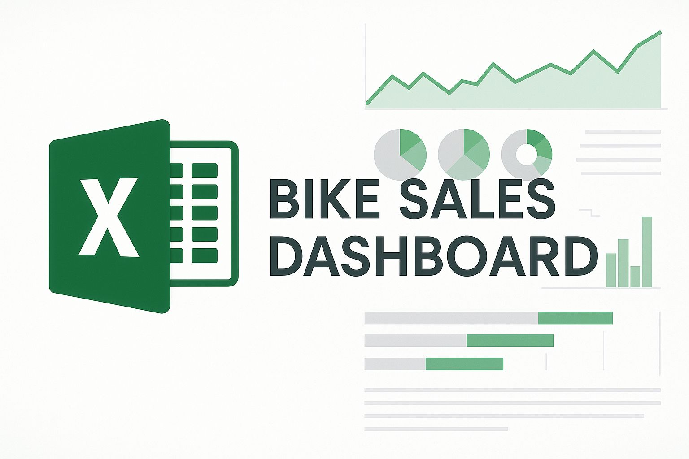

Cleaned and transformed a global layoffs dataset using MySQL — standardized inconsistent entries, removed duplicates, and handled missing values to prepare the data for effective analysis.


Conducted exploratory data analysis on global layoff data using MySQL — utilized CTEs, aggregations, and filters to uncover trends by company, country, year, and layoff impact.
Created an interactive Tableau dashboard to analyze British Airways customer reviews. Used dynamic filters and visualizations to reveal key patterns and insights for effective data storytelling.

Transformed raw bike sales data into actionable insights using advanced Excel techniques — built an interactive dashboard to help business leaders identify high-performing regions and customer segments.

Transformed raw survey data into actionable insights using Power BI — built an interactive dashboard to help uncover trends in job roles, experience, geography, and tool usage among data professionals.